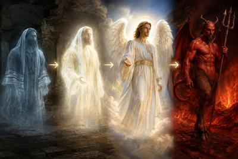

Lo más seguro es que ya no existiría. Tan poderoso es ese personaje en el cristianismo, que según dicen, el lugar donde más se menciona es en las iglesias. Y es que el cristianismo, en su evolución, encontró lo poderoso que era el recurso de que «Dios» tuviera un antagonista. Para empezar, así no es el culpable de lo malo que ocurre: o es el ser humano o es el Diablo. Y para «Dios» quedan sólo los méritos. Así, «Dios» y el Diablo se convirtieron en un dúo inseparable: protagonista y villano, héroe y enemigo.


Lo curioso es que los cristianos viven aterrorizados por Satanás, un personaje cuyo concepto e imagen no siempre fueron terroríficos, y que la tradición convirtió en un ser grotesco a través de los siglos. En la Biblia hebrea aparece la palabra śāṭān (שָּׂטָן), que significa adversario, oponente o acusador. Un sustantivo común. No es el nombre propio de un monstruo cósmico que vive en el infierno. Y en algunos textos incluso, como Samuel o Reyes, se refiere a adversarios meramente humanos.
El libro de Job menciona a ha-satán, «el acusador» «el adversario», quien todavía no es el enemigo de «Dios», ni el gobernante del averno, sino un ángel que trabaja en la corte celestial, cuya misión es viajar a la Tierra a buscar debilidades humanas, para actuar como acusador.
Además, muchos creyentes que leen el Génesis, automáticamente ven a Satanás en la serpiente del Edén. Sin embargo, el texto sólo dice que es el más astuto de los animales, y su identificación con Satanás surge mucho después dentro de la tradición cristiana, especialmente en textos como Apocalipsis.
Durante el exilio babilónico, proliferaron entre los judíos ideas sobre ángeles, demonios, espíritus malignos, seres rebeldes y fuerzas sobrenaturales enfrentadas al bien. Textos como 1 Enoc y Jubileos, desarrollaron historias de seres celestiales rebeldes. Sin embargo, tampoco podemos afirmar que los judíos simplemente copiaron el Diablo del zoroastrismo, puesto que la evolución de Satanás fue gradual y mucho más compleja.
Por otra parte, cuando la Biblia hebrea fue traducida al griego en el siglo III a. e. c., para dar forma a la Septuaginta, śāṭān fue sustituido con diábolos (διάβολος), que significa calumniador, difamador o acusador. Y de ahí procede nuestra palabra «Diablo». De esta forma, un término que originalmente significaba simplemente «adversario», terminó convertido después de siglos, en el nombre propio del enemigo absoluto de «Dios». Una traducción contribuyó a dar forma al personaje que hoy aterroriza a los cristianos.
Pero hay otro dato curioso: los cristianos utilizan indistintamente Satanás, Diablo, Lucifer y Belcebú, como si fueran nombres de la misma criatura, pero no es así. Belcebú provenía originalmente del dios cananeo Baal, que en ciudades como Ecrón se llamaba Baal-Zebûl, que significa «Señor de los Cielos» o «Señor de la alta morada». Pero los antiguos hebreos lo llamaban despectivamente Baal-Zebub, «Señor de las Moscas». Ya para el siglo I, sin embargo, la palabra se había convertido en Belcebú, adquiriendo connotaciones maléficas, y termina asociado al jefe de los demonios. Así, cuando los fariseos acusan a Jesús de expulsar demonios en nombre de Belcebú (Mateo 12:22-28; Marcos 3:22), lo que quieren decir era que estaba utilizando un poder maligno.
Y el caso de Lucifer quizás sea más curioso. Isaías 14:12 contiene un poema satírico burlándose del rey de Babilonia. El texto hebreo habla de Helel ben Shahar, «brillante, hijo de la aurora». Pero cuando Jerónimo tradujo la Biblia al latín para producir la Vulgata en el siglo IV, utilizó en ese texto la palabra «lucifer», que proviene de lux (luz) y ferre (llevar), significando literalmente «portador de luz», nombre poético que usaban los romanos para referirse al planeta Venus, que brilla en el cielo justo antes del amanecer (el «lucero de la mañana»). Y siglos después, la tradición cristiana relacionó ese pasaje con la caída de Satanás, naciendo así una asociación que hoy parece obvia para millones de creyentes, pero que no era el significado original del pasaje de Isaías. Es decir, un título poético relacionado con un lucero, terminó convertido también en el nombre del Diablo.
¿Y cuál era el concepto que Jesús tenía del Diablo? Como la Septuaginta se había escrito tres siglos antes, para esos tiempos ya era familiar la palabra «Diablo». Sin embargo, siendo Jesús un judío de Galilea del siglo I, su idioma materno era el arameo, y en la sinagoga se leía el hebreo, y en ambos idiomas se utilizaba la palabra Satán o Satanás (con significado de «adversario» o « acusador»). Jesús no conocía la palabra «Lucifer», porque la asociación de esta palabra con el Diablo nació siglos después.
Décadas después de Jesús, cuando nace el Nuevo Testamento, la evolución de Satanás se había consolidado. En los Evangelios y el Apocalipsis, es presentado de forma unificada como el enemigo jurado de «Dios», el tentador de Jesús y el «príncipe de este mundo». Y junto a la evolución del concepto, ocurrió también la evolución de la imagen del personaje, hasta llegar a su iconografía actual, como un ser rojo, con cuernos, pezuñas partidas, barba de chivo, cola puntiaguda y un tridente. Pero esa imagen tan temida por los cristianos no proviene de la Biblia, sino que es una mezcla posterior del arte medieval y elementos de dioses paganos (como Pan o el dios egipcio Seth).
Ahora bien, Jesús como judío del siglo I, no habría tenido del Diablo una imagen mental antropomórfica (con forma humana caricaturizada) ni puramente física, sino más bien cósmica, espiritual. Para Jesús y sus contemporáneos, el Diablo era fundamentalmente un espíritu o un ángel de gran poder que se había rebelado contra «Dios». Pero no tenía un cuerpo físico. Incluso cuando dice: «Yo veía a Satanás caer del cielo como un rayo» (Lucas 10:18), su mente evoca una entidad celestial, una criatura de luz divina cuya caída fue catastrófica y fulminante. Pero su apariencia no era «fea» en un sentido físico, sino corrompida en un sentido espiritual.
Pero lo importante de todo esto es que el sistema Dios-Diablo resultó ser clave en la sobrevivencia del cristianismo. «Dios» necesita un enemigo permanente para mantenerse vigente. Y los dirigentes cristianos necesitan a Satanás para mantener controlada a la feligresía.
[Godless Freeman]
Comentarios
Comments powered by Disqus